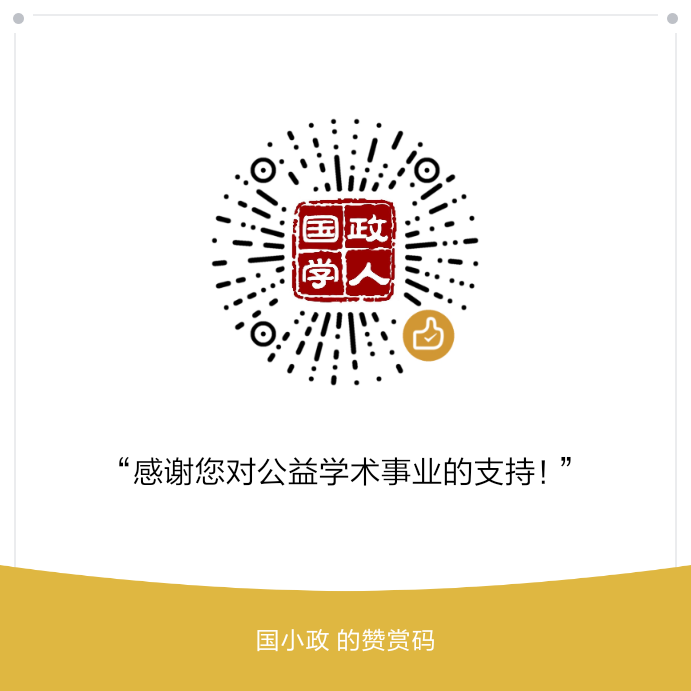

收录于合集
期刊简介

《中国国际政治杂志》（ The Chinese Journal of International Politics ）成立于2006年，主编是孙学峰，是由牛津大学出版社每季度出版的经同行评议的学术期刊，以现代方法论为基础研究国际关系，也发表历史研究和政策导向的论文。该期刊大部分文章或与中国有关，或对中国的外交政策有影响。
本期编委
【编译】王川 周玫琳 扎西旺姆 周雨橙 李玉婷
【校对】许文婷
【审核】周玫琳
【排版】贺奕

本期目录
1. 从天朝到世界：“文化理想主义”和“道义现实主义”——全球国际关系学的中国贡献
From Heaven to Earth: ‘Cultural Idealism’ and ‘Moral Realism’ as Chinese Contributions to Global International Relations
2. 地缘政治、民族主义与对外直接投资：对“中国威胁”的认知与美国公众对中国对美直接投资的态度
Geopolitics, Nationalism, and Foreign Direct Investment: Perceptions of the China Threat and American Public Attitudes toward Chinese FDI
3. 走向经济脱钩? 梳理中美贸易战的中国话语
Towards Economic Decoupling? Mapping Chinese Discourse on the China–US Trade War
4. 新兴强权与民间形象管理：媒体中的孔子学院与中国
Rising Powers and Grassroots Image Management: Confucius Institutes and China in the Media
5. 对外援助和现状：前马歇尔计划时期的援助证据
Foreign Aid and the Status Quo: Evidence from Pre-Marshall Plan Aid
摘要译文
1.
从天朝到世界：“文化理想主义”和“道义现实主义”——全球国际关系学的中国贡献
【题目】 From Heaven to Earth: ‘Cultural Idealism’ and ‘Moral Realism’ as Chinese Contributions to Global International Relations
【作者】 Amitav Acharya，著名国际关系研究学者、美利坚大学国际关系专业杰出教授、国际研究协会（ISA）前主席。
【摘要】 国际关系学科因忽视或边缘化核心西方国家以外的国家和社会而日益受到批评。“全球国际关系学”(Global IR)这一概念自2004年提出，旨在弥合“西方与非西方”（West and the Rest）分野，从而发展出一门更为包容的学科，并认识到这门学科基础的多样性。同时，学界也存在一种在国家或区域的基础上发展理论或者“学派”的趋势，以中国最为显著。本文考察了一些兴起于中国的理论构建，例如“中国学派”(Chinese School of IR)的奠基人——秦亚青的“关系理论”(Relational Theory),赵汀阳的适用于国际关系与世界秩序研究的“天下”(all under Heaven)，以及“清华学派”(Tsinghua School)的领军人物——阎学通的“道义现实主义”(Moral Realism)等。对中国国内外的很多学者来说，许多中国的研究方法与它们对国际关系领域做出的贡献之间的关系是不明确的。本文并非描述中国研究方法的独特之处与复杂之处，而是希望能够促进中国学者与其他国家学者之间的对话，以期使中国学者更清楚地认识到中国的研究方法对国际关系研究的重要性。同时，作者论证了尽管中国的研究方法做出了重要的贡献，但是其在国际关系理论（International Relations Theory）方面仍然面临着很多挑战，其中包括中国学者需要提供更具有说服力的证据来证明他们提出的概念和解释能够应用于其它社会以及更普遍的国际关系。此外，中国的研究方法也需要在世界范围内吸引大量支持者，鼓励其他学者（尤其是青年学者）研究议程的设定，并且与中国官方的政策框架保持距离。全球国际关系学为强调或者应对上述挑战，尤其是在避免文化例外主义(cultural exceptionalism)和确保其在中国范围之外的相关性方面提供了一种有益的框架。
The discipline of International Relations (IR) is increasingly being criticized for ignoring and marginalizing states and societies outside of the core countries of the West. The idea of a ‘Global IR’ has been proposed since 2014 a pathway toward a bridging the ‘West and the Rest’ divide and thus develop a more inclusive discipline, recognizing its multiple and diverse foundations. At the same time, there is a trend toward developing theories, or ‘schools’, on a national or regional basis, the leading examples of which come from China. This article examines some theoretical constructs emerging in China, such as the ‘Relational Theory’ of Qin Yaqing, who is the foundational scholar in the ‘Chinese School of IR’, the Tianxia (‘all under Heaven’) concept as applied to IR and world order by Zhao Tingyang, and ‘Moral Realism’ of Yan Xuetong, who is the leading figure of the ‘Tsinghua School’. To many scholars, both inside and outside China, the relationship among the various Chinese approaches and their overall contribution to the IR field remain unclear. Without claiming to capture all their nuances and complexity, this article hopes to stimulate a conversation among scholars, Chinese and foreign, with a view to generate greater clarity and highlight their importance to the study of IR. I argue that while making important contributions, the Chinese approaches to International Relations Theory (IRT) also face a number of challenges. This includes the need for them to offer more convincing proof that the concepts and explanations they propose can apply to other societies and to IR more generally. Moreover, there is the need for these approaches to attract a critical mass of followers worldwide, stimulate a research agenda for other, especially younger scholars, and distance themselves from the official Chinese policy framings. The Global IR approach offers a helpful framework for highlighting and perhaps addressing these challenges, especially in avoiding cultural exceptionalism and ensuring their wider relevance beyond China.
【编译】 王川 【校对】 许文婷
2.
地缘政治、民族主义与对外直接投资：对“中国威胁”的认知与美国公众对中国对美直接投资的态度
【题目】 Geopolitics, Nationalism, and Foreign Direct Investment: Perceptions of the China Threat and American Public Attitudes toward Chinese FDI
【作者】 Ka Zeng，阿肯色大学政治学教授；Xiaojun Li，不列颠哥伦比亚大学政治学系助理教授
【摘要】 近年来，中国对外直接投资（FDI）快速增长，这对东道国造成的经济与政治影响愈发引起学界兴趣。然而，几乎没有研究关注对中国崛起的担忧如何塑造公众对这类投资的态度。本文检验美国（公众）的威胁认知与其对（中国）对美直接投资的偏好之间的联系。本文认为，由于地缘政治担忧和民族主义的加剧，对“中国威胁”的认知对美国公众关于未来中国对美直接投资的作用的看法有负面影响。本文利用一项调查实验说明，当受访者被事先告知强调中国带来的安全和经济威胁的信息时，比起没有收到这种事先告知的情况，他们的确更不易支持中国的FDI。此外，因果中介分析（causal mediation analysis）显示，安全和经济威胁的处理效应（treatment effect）通过受访者关于中国FDI对美国经济与国家安全带来挑战的担忧这一中介变量发挥效果。
The rapid increase in recent years of Chinese outbound foreign direct investment (FDI) has prompted growing scholarly interest in its economic and political implications for host countries. However, relatively little attention has been paid to how concerns over the rise of China may shape public attitudes towards such investment. This article tests the link between threat perception and preferences for FDI in the United States. We argue that, due to heightened geopolitical concerns and nationalism, perceptions of the China threat negatively affect how the American public views the impact of incoming Chinese FDI. Using a survey experiment, we show that respondents are indeed less likely to support Chinese FDI when primed with information that highlights the security and economic threats posed by China than when they receive no such priming. Furthermore, causal mediation analyses reveal that the treatment effects of security and economic threats are mediated by respondents’ concerns about the challenges that Chinese FDI poses to national security as well as to American economy.
【编译】 周玫琳 【校对】 许文婷
3.
走向经济脱钩? 梳理中美贸易战的中国话语
【题目】 Towards Economic Decoupling? Mapping Chinese Discourse on the China–US Trade War
【作者】 李巍，中国人民大学国际关系学院教授，研究方向为国际关系理论、国际政治经济学、美国国际经济政策及中国经济外交。
【摘要】 自特朗普就任美国总统以来，中美关系发生了许多变化，其中最重要的事件是中美贸易战的爆发。其规模和影响之大前所未有，在中国引起了广泛关注与争议。本文旨在回顾特朗普政府上台以来的三年时间里，中国有影响力的知识分子及著名思想家就中美贸易战进行论争的四个主要阶段。中国学者最初的争论在于是否会发生贸易战，出现了乐观与悲观的区分。不久之后在中美关系急转直下，贸易战似乎难以避免之时，中国学者将注意力转向了美国对中国发动贸易战的原因，形成了结构冲突理论（structural conflict theory）、制度冲突理论（institutional conflict theory）和国内问题输出理论（the theory on exporting domestic problems）三个不同的解释。在中美开始对彼此的出口货物施加额外关税，中兴通讯设备公司及华为事件爆发之时，关于如何应对贸易战的论争在“举国体制派”（whole nation system school）和“市场改革派”（market reform school）之间产生分歧。在应对科技战的问题上，中国知识分子在“自主创新”和“开放创新”的道路上存在分歧。最近多种迹象表明，中美贸易战可能无限期地持续下去，两国的经济脱钩也有可能发生。因此一场激烈的争论已经在两派之间展开:一派主张为这种经济脱钩做充分准备，另一派则坚持与美国经济进一步挂钩。虽然这四个阶段的主题有所不同，但争论方的概念本质具有一定的一致性。它们之间的分歧，本质上是在国家权力与市场力量、独立与相互依存、权力的零和竞争与经济合作共赢等问题上的分歧。这也是中国学术界对古典政治经济学的不同观点的一个例证。
Tremendous changes have occurred in China–US relations since Donald J. Trump took office in the White House, but the most significant event is the outbreak of the China–US trade war, whose unprecedented scale and impact has drawn wide attention in China and sparked considerable debate. This article aims to review the four main stages of this great debate on the China–US trade war among China’s influential intellectuals and prominent thinkers. It covers the three-year period since beginning of the Trump administration. The initial argument among Chinese academics was whether or not there could ever be a trade war, which led to a dividing line between optimists and pessimists. Soon after, when China-US relations took a sharp downturn and a trade war seemed inevitable, Chinese scholars shifted their focus to reasons why the United States should wage a trade war against China. This culminated in three different perspectives embodied respectively in the structural conflict theory, institutional conflict theory, and the theory on exporting domestic problems. After China and the United States began slapping additional tariffs on one another’s exported goods, and with the flare-up of the Zhongxing Telecommunication Equipment Corporation (ZTE) and Huawei incidents, the debate on how to respond to a trade war cleaved between the ‘whole nation system school’ and the ‘market reform school’. As to coping with the technology war, Chinese intellectuals were divided between the paths of ‘independent innovation’ and ‘open innovation’. More recently, in view of the many signs that the China–US trade war could continue indefinitely, and an economic decoupling of the two nations is no longer unimaginable, a fierce debate has arisen between those that advocate full preparations for such economic decoupling and those who insist on further links with the US economy. Although the main themes of the four stages of the debate differ somewhat, they share a certain degree of consistency as regards the conceptual pedigree of the debating parties. Their divergence derives, in essence, from different perspectives on such issues as state power versus market force, independence versus interdependence, and zero-sum competition of power versus win-win economic cooperation. This also exemplifies the competing views in Chinese academia on classical political economy.
【编译】 扎西旺姆 【审校】 许文婷
4.
新兴强权与民间形象管理：媒体中的孔子学院与中国
【题目】 Rising Powers and Grassroots Image Management: Confucius Institutes and China in the Media
【作者】 Samuel Brazys，都柏林大学政治与国际关系学院副教授；Alexander Dukalskis，都柏林大学政治与国际关系学助理教授。
【摘要】 本文提出并检验了一种民间形象的管理机制，以解释新兴强权如何打造更有利于其利益的国际环境。其目的是通过影响普通外国民众的知觉，促进该国外交政策目标的达成。为了检验这个机制，本文将中国孔子学院（CIs）视为中国民间形象管理策略中一种可观察的工具，并考察了其产生的影响。本文采用了一种时空方法（spatial- temporal approach），通过全球事件、语言与语调数据库（GDELT）的数据，发现对某个活跃的孔子学院的亲近，会使当地媒体在报道与中国有关的事件时，显著且实质性地改善报道时的语调。这个发现同样在不同的规范与估算策略中得到支持，其与使用非洲晴雨表（Afrobarometer）所生成的家庭意见数据结果在定性上是一致的。理论上，本文的研究结果表明，对于理解话语变化的重要性而言，除了关注精英的态度之外，系统性地考察大众对新兴强权的表现和知觉也很重要。更直接地说，本文的研究发现揭示了中国孔子学院正在帮助中国改善外国民众对其的看法。
This article proposes and tests a mechanism of grassroots image management to explain how rising powers craft an international environment more conducive to their interests. The aim is to promote the state’s foreign policy goals by influencing the perceptions of ordinary foreign citizens. To test this mechanism, we examine the impact of China’s Confucius Institutes (CIs) as an observable instrument of China’s grassroots image management strategy. Using data from the Global Database of Events, Language, and Tone (GDELT), we employ a spatial–temporal approach which finds that proximity to an active CI significantly and substantively improves the tone of media reporting about events relevant to China in that locality. The finding is robust to different specifications and estimation strategies, and is qualitatively consistent with results generated using household opinion data from Afrobarometer surveys. Theoretically, our results suggest the importance of systematically examining presentations and perceptions about rising powers at the popular level, in addition to focusing on elite attitudes, to understand discursive change. More directly, our findings reveal that CIs are helping to improve how China is viewed among foreign publics.
【编译】 周雨橙 【审校】 许文婷
5.
对外援助和现状：前马歇尔计划时期的援助证据
【题目】 Foreign Aid and the Status Quo: Evidence from Pre-Marshall Plan Aid
【作者】 Daniel Markovits，拉法耶特学院政府与法律学院文学士候选人；Austin Strange，哈佛大学肯尼迪政府学院博士候选人；Dustin Tingley，哈佛大学肯尼迪政府学院教授。
【摘要】 几个世纪以来，对外援助一直是一个重要的政策工具，但国际关系研究基本上认为对外援助是二战后出现的新现象。作者认为记录更早的类似援助的活动有助于为援助的系统性政治动力提供新的思路。作者建立了一个框架，将援助与国际政治的现状联系起来，并在该框架中填充了一系列包括西方和非西方的援助者在内的历史和当代的案例。作者的分析揭示了来自不同地区、不同历史时期和不同国际体系的援助国政府利用援助和其他形式的优惠融资来追求国际政治目标的方式之间惊人的相似性。该发现表明，通过考虑马歇尔计划之前的援助的根源，研究人员可以更有效地将提供对外援助与崛起国家的动力、国际正式和非正式等级制度以及国际关系中的其他研究议程联系起来。分析还指出，在理解援助与国际体系之间的联系（这一联系在后马歇尔计划时期不太普遍）时，需要更多地关注非西方和第二次世界大战之前的证据。
Foreign aid has served as an important policy tool for centuries, yet international relations research essentially treats it as a novel, post-World War II phenomenon. We argue that documenting aid-like activities in earlier historical periods helps shed new light on the systemic political dynamics of aid giving. We introduce a framework that links aid giving to the status quo in international politics and populate the framework with a diverse set of historical and contemporary cases, including Western and non-Western donors. Our analysis reveals striking similarities between the ways in which donor governments from diverse regions, historical periods, and international systems have utilised aid and other forms of concessional finance to pursue international political goals. Our findings suggest that by considering the pre-Marshall Plan roots of aid researchers can more effectively link foreign aid provision to rising power dynamics, international formal and informal hierarchies, and other research agendas in international relations. Our analysis also points to the need for greater attention to non-Western and pre- World War II evidence in understanding the link between aid and systems of international relations that have been less prevalent in the post-Marshall Plan era.
【编译】 李玉婷 【审校】 许文婷
点击左下角“ 阅读原文”可获取本期英文版原文
扫下方二维码查看往期精彩
分类导览 1

分类导览 2
【新刊速递】第01期 | Review of International Studies Vol.45, No.4, 2019
【新刊速递】第02期 | International Relations Vol.33, No.3, 2019
【新刊速递】第03期 | International Organization Vol.73, No.3, 2019
【新刊速递】第04期 | World Politics, Vol.71, No.4, 2019
【新刊速递】第05期 | European Journal of International Relations
【新刊速递】第06期 | Security Studies, Vol.28, No.4, 2019
【新刊速递】第07期|International Security, Vol 44, No. 2, 2019
【新刊速递】第08期| Cambridge Review of International Affairs,Vol.32,No.4
【新刊速递】第09期| International Relations of Asia-Pacific Vol.19,No.3
【新刊速递】第10期 | International Studies Review, Volume.21, No.3, 2019
【新刊速递】第11期|Cooperation and Conflict, Vol. 54, No. 4, 2019
【新刊速递】第12期 | International Affairs, Vol.95, No.6，2019

